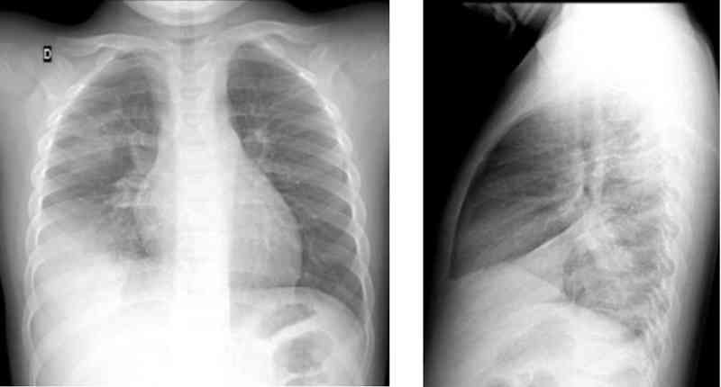

Bienvenue Sur Medical Education
Infections respiratoires basses de l'enfant
EnfantSpécialité : infectieux / pédiatrie / pneumologie /
Points importants
-
Les infections respiratoires basses chez l’enfant sans facteurs de risque comprennent 3 tableaux cliniques bien différents quant à leur symptomatologie et à leur évolution :
- de bronchiolite chez le nourrisson ou de bronchite aiguë chez l’enfant, d’étiologie virale et d’évolution généralement favorable à moins de facteurs de risque (ancien prématuré, dysplasie bronchopulmonaire, cardiopathie cyanogène ou avec HTAP, déficit immunitaire, drépanocytose)
- de pneumopathie aiguë ‘lobaire’ liée à S. pneumoniae ou ‘atypique’ liée à M. pneumoniae d’évolution relativement simple
- de pleuro-pneumopathie bactérienne ou d’atteinte alvéolaire diffuse (SDRA), liée à S. pneumoniae, à Staphylococcus aureus notamment sécréteur de la toxine de Panton-Valentine ou à Streptoque du groupe A, d’évolution sévère ou compliquée
-
Tandis que les premières relèvent d’un traitement symptomatique ambulatoire, à moins de facteurs de risque, les secondes réclament la mise en œuvre d’une association d’antibiotiques administrés par voie veineuse et à posologies élevées pour assurer une concentration tissulaire suffisante afin d’éviter l’évolution vers une insuffisance respiratoire aiguë (SDRA) pas toujours réversible
Présentation clinique / CIMU
SIGNES FONCTIONNELS
Triade symptomatique
- Fièvre
- Toux
- Difficultés respiratoires d’intensité variable
Les pneumonies sont l’expression de l’atteinte parenchymateuse, pour lequel une origine bactérienne doit être évoquée. Deux tableaux restent classiques :
- Fièvre d’apparition brutale avec altération de l’état général
- Parfois douleur thoracique et/ou abdominale (trompeuse), évocatrice d’une pneumonie franche lobaire aiguë à pneumocoque. Elle donne souvent l’impression d’une gravité. Elle s’observe souvent chez l’enfant âgé < 3 ans)
-
Pneumonie atypique (principalement à Mycoplasmae pneumoniae et autres germes dits atypiques) :
- début plus progressif
- toux pénible et durable
- état général conservé
- signes extra-pulmonaires variés (myalgies, éruption cutanée)
- s’observe à partir de 3 ans et surtout après 3 ans
CONTEXTE
Facteurs de risque
- Ancien prématuré (AG < 32 sem) ou très grand prématuré (< 28 sem)
- Dysplasie bronchopulmonaire (oxygéno-dépendance à 36 sem AC)
- Cardiopathie cyanogène ou avec HTAP
- Déficit immunitaire congénital ou acquis
- Drépanocytose
Circonstances de survenue
- Contage viral fréquent familial
- Vie en collectivités (crèche, école)
EXAMEN CLINIQUE
Doit être complet
Doit s’attacher particulièrement à
- Compter la FR sur une minute
-
Vérifier sa régularité ou non :
- une apnée est définie comme une pause respiratoire d’une durée > 10s et elle est significative si > 20s (désaturation en oxygène et bradycardie associées)
-
Observer l’enfant respirer :
- dyspnée expiratoire (bronchiolite) ou inspiratoire (pneumonie, SDRA), symétrique ou asymétrique (épanchement gazeux ou liquidien intra-thoracique)
-
Apprécier l’existence de signes de lutte :
- battement des ailes du nez
- tirage sus-costal, inter-costal, sous-costal
- balancement thoraco-abdominal (le score de Silverman n’a pas d’intérêt)
- Percuter une matité
-
Ausculter de façon bilatérale et symétrique :
- wheezing audible ou râles sibilants expiratoires caractéristiques d’une bronchiolite
- souffle tubaire audible ou râles crépitants inspiratoires caractéristiques d’une pneumonie franche lobaire aiguë
- auscultation normale d’une bronchite (toux grasse caractéristique) ou d’une pathologie interstitielle (polypnée à l’effort)
- Evaluer la coloration rose ou cyanosée, maintenant quantifiée par l’oxymétrie de pouls, ou la fatigue respiratoire par la coloration pâle, quantifiée le cas échéant par la capnographie
EXAMENS PARACLINIQUES SIMPLES
- Scope (FR), oxymétrie de pouls (SpO2)
- Scope (FC), oscillométrie (PA non invasive)
- Capnographie, aspirative sur canule nasale (vs. directe sur sonde d’intubation)
Signes paracliniques
BIOLOGIQUES
Devant une bronchiolite ou une bronchite
- En ambulatoire, les examens biologiques sont inutiles
Devant une pneumonie
- En ambulatoire, les examens ne sont pas réalisés de façon systématique
-
En cas d’hospitalisation, sont utiles :
- NFS + plaquettes (hyperleucocytose > 10 000/mm3)
- CRP et/ou PCT (franchement élevées)
- hémoculture rarement contributive (2mL < 2 ans, 5mL de 2 à 10 ans, 10mL > 10 ans)
- antigènes solubles urinaires (BinaxNow® positif pour S. pneumoniae)
Les tests de diagnostic rapide (TDR) pour la grippe saisonnière A ou B (voire H1N1) sur sécrétions nasopharyngées ont une Se ~50-80% et une Sp ~100%, mais aussi pour VRS et d’autres virus respiratoires
- Leur positivité (délai de réponse quelques minutes) est extrêmement utile aux Urgences pour confirmer un diagnostic d’infection respiratoire basse virale et décider le retour à domicile avec un traitement symptomatique
Immunofluorescence directe sur sécrétions nasopharyngées (Se ~80-90%, Sp ~90% - délai de réponse quelques heures) ou RT- PCR (Sp ~90-95%, Sp~100% - délai de réponse 24-48h) sont utiles pour le cohortage des cas hospitalisés dans une unité « épidémie hivernale »
IMAGERIE
Radiographie de thorax de face
-
Indications :
- enfant fébrile avec auscultation pulmonaire évocatrice (crépitants, sous-crépitants) et/ou tachypnée (en dehors des bronchiolites)
- fièvre inexpliquée (prolongée ou mal tolérée), en particulier chez le nourrisson
- toux fébrile persistante ou accompagnée de tachypnée croissante
- pneumonie récidivante ou suspicion de corps étranger bronchique
- doute diagnostique entre bronchite et pneumonie
- La radiographie de thorax de face, en inspiration et en position debout, est le seul cliché recommandé
-
Peut montrer :
-
une distension thoracique et des opacités péribronchiques (bonchiolite)
-
 _723
Photo
Radiographie thoracique d'un nourrisson avec bronchiolite aiguë
_723
Photo
Radiographie thoracique d'un nourrisson avec bronchiolite aiguë
-
-
une opacité parenchymateuse systématisée (pneumonie franche lobaire aiguë), sans corrélation entre les images observées et le micro-organisme responsable
-  _724 Photo Radiographie de thorax d'un enfant avec pneumonie franche lobaire aiguë
-
une distension thoracique et des opacités péribronchiques (bonchiolite)
- Toute suspicion de corps étranger inhalé doit faire pratiquer des clichés de face en inspiration et en expiration
-
En cas de ligne bordante pleurale, il convient de réaliser un cliché de face rayon horizontal en décubitus latéral du côté atteint, ou mieux compléter l’imagerie par une échographie pleurale qui permettra de localiser où il faut ponctionner (épanchement > 10 mm)
-
 _725
Radio de thorax et échographie pleurale chez un enfant avec pleuropneumopathie
_725
Radio de thorax et échographie pleurale chez un enfant avec pleuropneumopathie
-
- La radiographie de thorax ne doit pas retarder la mise sous antibiotique si l’indication a été posée
Diagnostic étiologique
Un grand nombre de virus sont impliqués dans les infections respiratoires basses
- VRS principalement chez le nourrisson
- Mais aussi, influenza, parainfluenza, adénovirus, métapneumovirus, rhinovirus, bocarvirus, coronavirus, etc…
Un grand nombre de bactéries sont aussi impliquées dans les infections respiratoires basses
- S. pneumoniae surtout < 3 ans
- M. pneumoniae et C. pneumoniae > 3 ans et surtout > 5 ans
- Mais aussi, Staphylococcus aureus notamment communautaire Méticilline-R, parfois sécréteur de la toxine de Panton-Valentine (pneumonie hémorragique ou nécrotique avec symptomatologie extra-pulmonaire), Streptocoque du groupe A, etc.
Diagnostic différentiel
Devant un tableau de bronchiolite chez le nourrisson
- Se méfier d’une insuffisance cardiaque si la radiographie de thorax montre une cardiomégalie (ICT > 0,6)
Devant une image segmentaire radiologique
- Le doute entre foyer pneumonique et atélectasie (corps étranger bronchique – bouchon muqueux) peut conduire à une fibroscopie ou une bronchoscopie pour l’ablation d’un corps étranger bronchique
Devant une pathologie alvéolaire diffuse
- Le mécanisme peut être hémodynamique (OAP) ou lésionnel : inhalation, infection virale (grippe) plus que bactérienne (S. aureus, Strepto A), hémorragie intrapulmonaire, etc.
Traitement
- L’âge de l’enfant est un facteur prépondérant dans la responsabilité de tel ou tel agent infectieux. Néanmoins, le risque infectieux le plus important est lié à S. pneumoniae
Avant l’âge de 3 ans, le pneumocoque est le premier agent infectieux responsable de pneumonie
- L’amoxicilline per os est recommandée en première intention
-
En cas d’allergie bénigne à la pénicilline sans contre-indication aux céphalosporines, les céphalosporines de 3e génération par voie veineuse sont recommandées :
- céfotaxime 150mg/kg/j IV en 3 fois, ce qui nécessite une hospitalisation
- ceftriaxone 50-75mg/kg/j en 1 fois, ce qui est compatible avec un traitement ambulatoire
- En cas d’allergie sérieuse aux beta-lactamines, une hospitalisation est souhaitable pour une antibiothérapie alternative par voie veineuse.
A partir de l’âge de 3 ans, le pneumocoque et les bactéries atypiques (Mycoplasma pneumoniae et Chlamydia pneumoniae) prédominent. Le choix antibiotique initial s’appuie sur le tableau clinique et radiologique
- Si celui-ci est en faveur d’une infection à pneumocoque, l’antibiothérapie recommandée est l’amoxicilline per os à la posologie de 80-100mg/kg/j en 3 prises par jour, jusqu’à l’âge de 10 ans sans dépasser 3g/j ensuite
- S’il est évocateur d’une bactérie atypique, l’utilisation d’un macrolide ayant l’AMM est recommandée en première intention : azithromycine per os 20mg/kg/j en 1 prise ou josamycine 50mg/kg/j en 2 prises
-
En cas d’allergie ou de contre-indications aux beta-lactamines :
- la pristinamycine peut être utilisée par voie orale à partir de l’âge de 6 ans, dans une forme sans gravité, chez l’enfant sans troubles digestifs (absence de vomissements)
- tous les autres cas doivent être hospitalisés
Dans de rares cas avant l’âge de 5 ans, l’absence de vaccination ou une vaccination incomplète contre Hemophilus influenza de type b et/ou la coexistence d’une otite moyenne aiguë purulente font proposer l’association amoxicilline-acide clavulanique per os à la posologie de 80 mg/kg/j d’amoxicilline en 3 prises
Il est recommandé de traiter
- Une pneumonie à pneumocoque pendant 10 jours (beta-lactamine)
- Une pneumonie à bactérie atypique pendant au moins 14 jours (macrolide)
- Néanmoins, de nombreux travaux suggèrent qu’une antibiothérapie plus courte serait tout aussi efficace (3 vs 5 jours), et en cohérence avec le raccourcissement des durées de traitement des pneumonies acquises sous ventilation mécanique
Les pleuropneumopathies ou les pneumopathies diffuses nécessitent une association d’antibiotiques par voie veineuse pendant une durée de 7 à 15 jours
-
S. pneumoniae ou germe non identifié :
- céfotaxime 300 mg/kg/j en 4 fois (en raison de la mauvaise diffusion pleurale) + vancomycine 60mg/kg/j en 4 perfusions de 30 min ou d’1h, voire en perfusion continue
-
Staphylococcus aureus Méthi-S :
- cloxacilline 200mg/kg/j en 4 fois + gentamicine 5-7,5 mg/kg/j en 1 fois, pendant au moins 48h mais pas plus de 5 jours (toxicité auditive et rénale)
-
Staphylococcus aureus Méthi-R :
- vancomycine 60mg/kg en 4 perfusions de 30 min ou d’1h, voire en perfusion continue + rifampicine 30mg/kg/j en 2 perfusions d’1h
-
Streptocoque du groupe A :
- céfotaxime 200 mg/kg/j en 4 fois + clindamycine 25mg/kg/j en 3 fois (si Clinda-S) ou rifampicine 30mg/kg/j en 2 perfusions d’1h
-
Mycoplasma ou Chlamydia pneumoniae :
- azithromycine per os 20mg/kg (< 25kg) ou 500mg (> 25kg) en une prise pendant 5 jours
- ou josamycine per os 50mg/kg/j en 2 prises pendant 7-10 jours
MEDICAMENTS
- Antibiothérapie pour les infections respiratoires basses de l’enfant
 _726
Tableau
Antibiothérapie pour les infections respiratoires basses de l'enfant
_726
Tableau
Antibiothérapie pour les infections respiratoires basses de l'enfant
Surveillance
CLINIQUE
L’apyrexie doit être obtenue en
- 24h (pneumonie à pneumocoque)
- 3-4 jours (pneumonie atypique), mais la toux est plus durable
- Sinon envisager une bithérapie amoxicilline + macrolide
- Rechercher une complication : abcès ou épanchement pleural
RADIOLOGIQUE
- La normalisation radiologique d’une pneumonie peut prendre un mois
- Dans le cas d’un épanchement pleural réactionnel ou purulent, l’échographie pleurale doit rechercher un cloisonnement afin de guider les ponctions évacuatrices ou le drainage thoracique souvent réalisé après effondrement des logettes par thoracoscopie
- Fibrinolyse pleurale vs. thoracoscopie vs. thoracotomie relèvent de spécialistes et sont affaire d’écoles
Devenir / orientation
-
L’efficacité thérapeutique est jugée sur la disparition de la fièvre obtenue en 24h (pneumonie à pneumocoque) ou en 3-4 jours (pneumonie atypique). En cas de non-améliration, revoir l’enfant à J3 pour décider d’une bithérapie amoxicilline + macrolide.
CRITERES D’HOSPITALISATION
 _727
Tableau
Critères d'hospitalisation en cas d'infections respiratoires basses de l'enfant
_727
Tableau
Critères d'hospitalisation en cas d'infections respiratoires basses de l'enfant
Indications d’hospitalisation
-
Hospitalisation d’emblée :
- pneumonie survenant chez un nourrisson < 6 mois
-
Critères cliniques de gravité :
- aspect général de l’enfant (aspect toxique)
- tolérance respiratoire (FR, signes de lutte)
- hypoxémie (SpO2 < 90% sous air)
- difficultés à s’alimenter
- conditions sociales précaires
- aggravation rapide
-
Critères radiologiques de gravité :
- épanchement pleural significatif (> 10 mm à l’échographie)
- présence d’une pneumonie étendue (> 2 lobes)
- image d’abcès
Mécanisme / description
Les infections respiratoires basses chez l’enfant sont une pathologie relativement rare par rapport aux infections des voies aériennes supérieures. La symptomatologie dépend du terrain sur lequel elle survient et du germe en cause
-
L'infection peut être :
- purement alvéolaire
- bronchique et alvéolaire
- interstitielle
- La plupart du temps, il s'agit d'une pathologie bénigne mais elle peut être très sévère du fait d'une bronchiolite aiguë, d'un œdème lésionnel (lors des étiologies virales) ou de la décompensation d'une insuffisance respiratoire chronique
- On distingue les pneumopathies communautaires, retrouvées en pratique de ville, et les pneumopathies nocosomiales, moins fréquentes, et qui posent des problèmes diagnostiques et thérapeutiques.
Algorithme
- Algorithme : pneumonie communautaire chez l’enfant
 _728
Algorithme
Algorithme : pneumonie communautaire chez l'enfant
_728
Algorithme
Algorithme : pneumonie communautaire chez l'enfant
Bibliographie
- Mizger JP. Acute lower tract infection. Mechanisms of disease. N Engl J Med 2008; 358:716-27.
- Ampofo K, Bender J, Sheng X, et al. Seasonal invasive pneumococcal disease in childre: role of preceding respiratory viral infection. Pediatrics 2008; 122:229-37
- Anjay MA, Anoop P. Diagnostic utility of rapid immunochromatographic urine antigen testing in suspected pneumococcal infections. Arch Dis Child 2008; 93:628-31
- Grijalva CG, Poehling KA, Edwards KM, et al. Accuracy and interpretation of rapid influenza tests in children. Pediatrics 2007; 119:e6.
- Faix DJ, Scherman SS, Waterman SH. Rapid-test sensitivity for novel swine-origin influenza A (H1N1) virus in humans. N Engl J Med 2009 (ahead of print)
- Pakistan Multicentre Amoxicillin Short Course Therapy (MASCOT). Clinical efficacy of 3 days versus 5 days of oral amoxicillin for treatment of childhood pneumonia: a multicentre randomised clincal trial. Lancet 2002; 360:835-41
- ISCAP Study Group. Three day versus 5 day treatment with amoxicillin for non-severe pneumonia in young children: a multicentre randomised clinical trial. BMJ 2004: doi:10.1136/bmj.com
- Wunderink R. A CAP on antibiotic duration. Editorial. Am J Resp Crit Care Med2006; 174:3-5
- Antibiothérapie par voie générale en pratique courante au cours des infections respiratoires basses de l’adulte et de l’enfant. Recommandations. Octobre 2005.
- British Thoracic Society guidelines for the managment of community-acquired pneumonia in childhood. Thorax 2002; 57:1-24
- Sahn SA. Diagnosis and management of parapneumonic effusions and empyema. Review. CID 2007; 45:1480-6
- Clark JE, Hammal D, Spencer D, Hampton F. Children with pneumonia: how do they present and how are they managed? Arch Dis Child2007; 92:394-8.
Auteur(s) : Jean-Christophe MERCIER